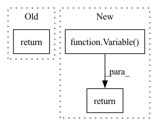

Pattern ID :28782
Before Change
def expr_idxs(self, idxs, div=1, mod=None):
idx_pieces = [str(self.offset)] + [(f"{idxs[i]}*{st}" if st != 1 else idxs[i]) for i,(sh,st) in enumerate(zip(self.shape, self.strides)) if sh != 1 and st != 0]
// TODO: do the div and mod in a smarter way
return "(("+" + ".join(idx_pieces)+f")/{div})" + (f"%{mod};\n" if mod is not None else "\n")
class ZeroView:
def __init__(self, old_shape, arg):After Change
// generate an expression if you have a variable or expression for each index
def expr_idxs(self, idxs):
return Variable.sum([Variable.num(self.offset)] + [Variable( idxs[i], 0, sh-1) *st for i,(sh,st) in enumerate(zip(self.shape, self.strides)) if sh != 1 and st != 0])
class ZeroView:
def __init__(self, old_shape, arg):In pattern: SUPERPATTERN
Frequency: 4
Non-data size: 3
Instances Fragment ID: 84676612
Project Name: geohot/tinygrad
Commit Name: 2b47ee401f8e5e187b2ce048a59b0d70fc93de49
Time: 2023-01-19
Author: 72895+geohot@users.noreply.github.com
File Name: tinygrad/shapetracker.py
M Class Name: View
N Class Name: View
M Method Name: expr_idxs(2)
N Method Name: expr_idxs(4)
M Parent Class:
N Parent Class:
M File Name: tinygrad/shapetracker.py
N File Name: tinygrad/shapetracker.py
M Start Line: 50
M End Line: 53
N Start Line: 48
N End Line: 49
Before Change
pos = pos.T
if self.method == "variance":
return self.wf.variance(param,pos)
elif self.method == "energy":
return self.wf.energy(param,pos)
After Change
l = self.wf.variance(param,pos)
elif self.method == "energy":
l = self.wf.energy(param,pos)
return Variable( l)
class NN(SOLVER_BASE):
Fragment ID: 84676608
Project Name: nlesc-jcer/qmctorch
Commit Name: 99ee9b8562f2f047dcddea957e04facb676509e5
Time: 2019-05-03
Author: nicolas.gm.renaud@gmail.com
File Name: pyCHAMP/solver/neural_net.py
M Class Name: QMCLoss
N Class Name: QMCLoss
M Method Name: forward(3)
N Method Name: forward(3)
M Parent Class: nn.Module
N Parent Class: nn.Module
M File Name: pyCHAMP/solver/neural_net.py
N File Name: pyCHAMP/solver/neural_net.py
M Start Line: 34
M End Line: 39
N Start Line: 34
N End Line: 40
Before Change
// lengths = lengths.cuda(device)
if self.include_lengths:
return Variable(arr, volatile=not train), lengths, Variable(lim_arr, volatile=not train)
return Variable(arr, volatile=not train)
class ReversibleField(Field):After Change
with torch.no_grad():
if self.include_lengths:
return Variable(arr), lengths, Variable(lim_arr)
return Variable( arr)
class ReversibleField(Field):
Fragment ID: 84676610
Project Name: stanford-oval/genienlp
Commit Name: 457809f608a8dbb3942e5694cd3278d1b3b6a2e6
Time: 2018-08-01
Author: mehrad@stanford.edu
File Name: text/torchtext/data/field.py
M Class Name: Field
N Class Name: Field
M Method Name: numericalize(7)
N Method Name: numericalize(7)
M Parent Class: RawField
N Parent Class: RawField
M File Name: text/torchtext/data/field.py
N File Name: text/torchtext/data/field.py
M Start Line: 358
M End Line: 374
N Start Line: 358
N End Line: 377
Before Change
inMask = F.interpolate(inMask, (inMask.size(2)//ntimes, inMask.size(3)//ntimes), mode="nearest")
inMask = inMask.detach().byte()
return inMask
def cal_mask_given_mask_thred(img, mask, patch_size, stride, mask_thred):
assert img.dim() == 3, "img has to be 3 dimenison!"After Change
assert inMask.size(0) == 1, "the first dimension must be 1 for mask"
inMask = inMask.float()
convs = []
inMask = Variable( inMask, requires_grad = False)
for id_net in range(conv_layers):
conv = nn.Conv2d(1,1,4,2,1, bias=False)
conv.weight.data.fill_(1/16)
convs.append(conv)
lnet = nn.Sequential(*convs)
if inMask.is_cuda:
lnet = lnet.cuda()
output = lnet(inMask)
output = (output > threshold).float().mul_(1)
return output
def cal_mask_given_mask_thred(img, mask, patch_size, stride, mask_thred):
assert img.dim() == 3, "img has to be 3 dimenison!" Fragment ID: 84676611
Project Name: kumapowerliu/rethinking-inpainting-medfe
Commit Name: 17d04d208950c9c4e2e8bc5251cf06205ec15285
Time: 2020-11-07
Author: 33801357+KumapowerLIU@users.noreply.github.com
File Name: util/util.py
M Class Name: AnonimousClass
N Class Name: AnonimousClass
M Method Name: cal_feat_mask(3)
N Method Name: cal_feat_mask(2)
M Parent Class:
N Parent Class:
M File Name: util/util.py
N File Name: util/util.py
M Start Line: 78
M End Line: 83
N Start Line: 76
N End Line: 93